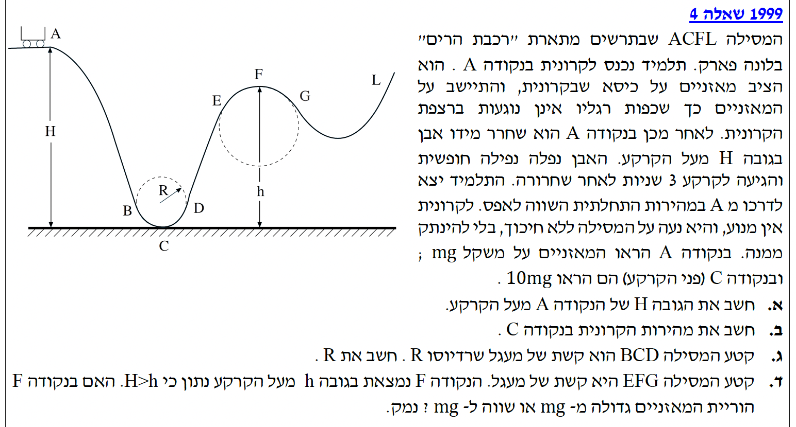
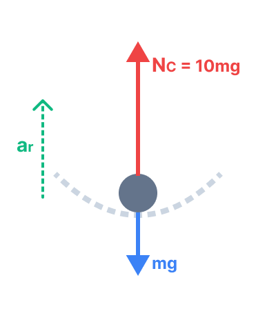
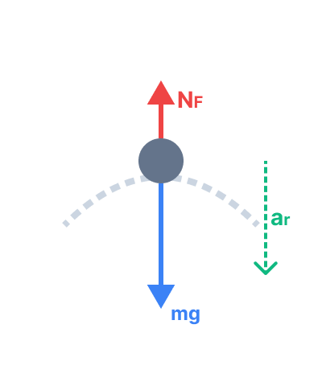

ניתוח תנועת אבן הנזרקת ונופלת בהשפעת כוח הכובד בלבד.

מה נתון: האבן נזרקה מגובה \( H \) והגיעה לקרקע לאחר \( t = 3 \text{ s} \). בבעיות של נפילה חופשית, הכוח היחיד הפועל על הגוף (בהזנחת התנגדות אוויר) הוא כוח הכובד, ולכן התאוצה האנכית היא \( g = 10 \text{ m/s}^2 \) כלפי מטה. נניח כעת כי האבן שוחררה ממנוחה או נזרקה אופקית, כך שמהירותה ההתחלתית בציר האנכי היא אפס (\( v_{0y} = 0 \)).
מה מחפשים: את הגובה \( H \) שממנו התחילה האבן את תנועתה.
נבחר מערכת צירים שבה ציר ה-\( y \) מכוון כלפי מטה, וראשית הצירים (\( y_0 = 0 \)) ממוקמת בנקודת הזריקה (\( H \)). מיקום הקרקע במערכת צירים זו יהיה \( y = H \).
נציב את הנתונים המשוואת המיקום-זמן עבור הציר האנכי:
מה נתון: המסילה חסרת חיכוך ("ללא חיכוך"). הקרונית משתחררת ממנוחה בנקודה A (\(v_A = 0\)) בגובה \( H = 45 \text{ m} \). נקודה C נמצאת על פני הקרקע (\( h_C = 0 \)).
עיקרון פיזיקלי: מכיוון שפועלים רק כוחות משמרים (כוח הכובד) וכוחות שהעבודה שלהם אפס (הכוח הנורמלי מהמסילה המאונך תמיד לכיוון התנועה), מתקיים חוק שימור אנרגיה מכנית.
נשווה את האנרגיה המכנית הכוללת בנקודה A לאנרגיה בנקודה C:
המסה \(m\) מצטמצמת בשני אגפי המשוואה (לכן המהירות לא תלויה במסת התלמיד או הקרונית). נבודד את המהירות \(v_C\):
מה נתון: בנקודה C, שהיא הנקודה הנמוכה ביותר בקשת המעגלית, הוריית המאזניים היא \( 10mg \). חשוב להבין: המאזניים תמיד מודדים את הכוח הנורמלי (\(N\)) המופעל עליהם מהתלמיד (וכנגזרת, שהם מפעילים עליו). לכן נתון לנו ש- \( N_C = 10mg \). מהירות הקרונית בנקודה זו שחושבה בסעיף הקודם היא \( v_C = 30 \text{ m/s} \).

בנקודה C, התלמיד נמצא בתנועה מעגלית. הכוחות הפועלים עליו בציר הרדיאלי (האנכי) הם הכוח הנורמלי \( N_C \) כלפי מעלה (לכיוון מרכז המעגל), וכוח הכובד \( mg \) כלפי מטה. כיוון התאוצה הרדיאלית הוא תמיד כלפי מרכז המעגל (כלומר, כלפי מעלה בנקודה זו).
נרשום את החוק השני של ניוטון בציר הרדיאלי:
נציב את הנתון \( N_C = 10mg \):
נצמצם את המסה \(m\), נציב \(g=10\) ואת המהירות \(v_C=30\) ונבודד את הרדיוס \(R\):
השאלה: האם בנקודה F (הנמצאת בגובה \(h < H\)) הוריית המאזניים גדולה מ-\(mg\), קטנה מ-\(mg\) או שווה ל-\(mg\)?

נקודה F נמצאת בשיא של קשת מעגלית כלשהי שרדיוסה \(r_{EFG}\). כעת, התאוצה הרדיאלית מכוונת כלפי מרכז המעגל, שזה במקרה זה כלפי מטה. הכוחות הפועלים על התלמיד הם עדיין כוח הכובד \(mg\) כלפי מטה, והכוח הנורמלי מהמאזניים \(N_F\) הפועל כלפי מעלה.
נרשום את משוואת הכוחות (כאשר נבחר את הכיוון החיובי מטה, לעבר מרכז המעגל):
נבודד את הכוח הנורמלי \(N_F\) (שהוא בעצם קריאת המאזניים):
על פי חוק שימור אנרגיה, מכיוון שנתון ש-\(H > h\), הקרונית לא איבדה את כל האנרגיה הקינטית שלה בהגיעה לנקודה F. יש לה מהירות חיובית (\(v_F > 0\)). לכן, הביטוי \( m \frac{v_F^2}{r_{EFG}} \) (שמייצג את הכוח הדרוש כדי לשמור על הגוף בתנועה המעגלית) הוא גודל חיובי בהכרח.
מכיוון שאנו מחסרים גודל חיובי מ-\(mg\), התוצאה עבור \(N_F\) חייבת להיות קטנה יותר מ-\(mg\). במילים אחרות, חלק מכוח הכובד מספק את התאוצה הרדיאלית, ולכן המסילה (והמאזניים) צריכים להפעיל פחות כוח דחיפה כלפי מעלה כדי לאזן את הגוף.